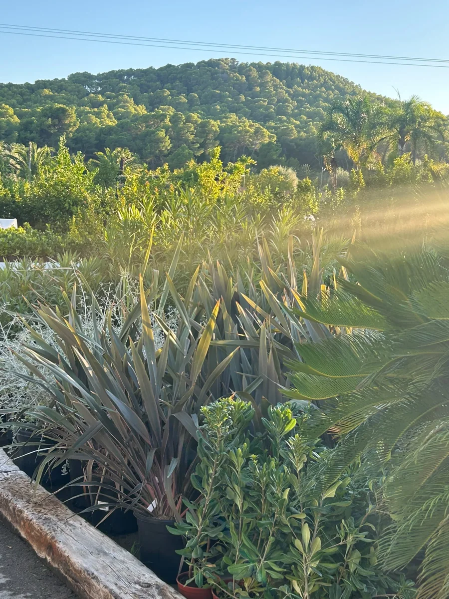

01 · JARDÍN
01 · JARDÍNSombra para quedarse
Un olivo, un lugar para sentarse y un borde de aromáticas. Un espacio para compartir los días de sol.

Diseñamos contigo un exterior para vivirlo. Plantas, sombras y materiales que encajan con tu casa y con nuestro clima.
Todo empieza por escucharte. Conocemos tu espacio y damos forma a una propuesta que puedas disfrutar cada día.
Una visita o una conversación para hablar de tu luz, tus metros y tu forma de vivir el exterior.
Especies que encajan con el sol, el suelo y el clima de la Marina Alta.
Recorridos, sombra y materiales, con una propuesta de presupuesto y calendario.
Diseño y construcción del jardín con el equipo de Toscal.
Desde una terraza hasta una parcela familiar o un encargo profesional. En el garden puedes ver las plantas, comparar materiales y ajustar la idea con nuestro equipo.
Ideas para orientar tu encargo. Las fotografías muestran plantas y materiales de nuestro garden.
01 · JARDÍNUn olivo, un lugar para sentarse y un borde de aromáticas. Un espacio para compartir los días de sol.
 02 · TERRAZA
02 · TERRAZAPlantas en maceta y cerámica que dan vida a una terraza, con una selección acorde a la luz y al viento.
 03 · BIENVENIDA
03 · BIENVENIDAEjemplares, texturas y un camino de entrada que acompaña a la casa desde el primer paso.
Cuéntanos el espacio que imaginas. En cuatro pasos tendremos lo necesario para empezar a hablar.